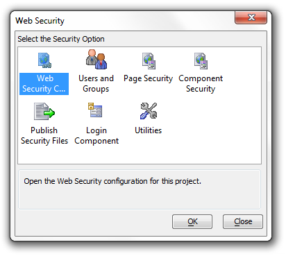
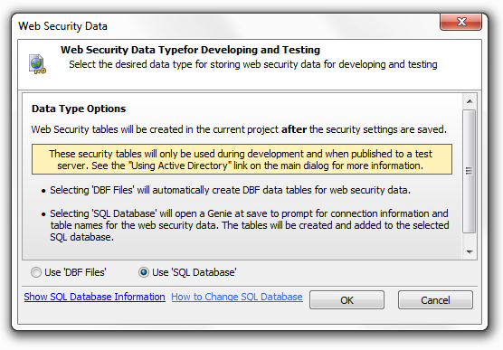
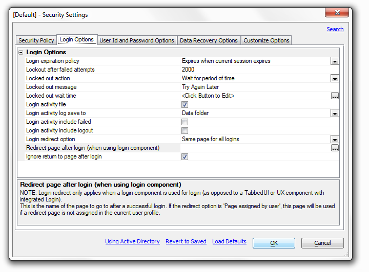
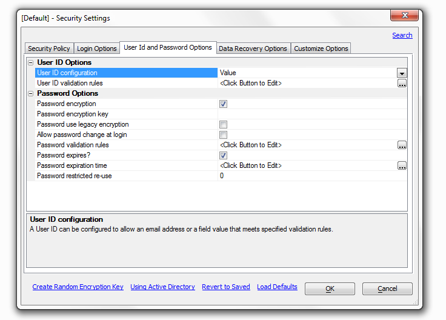
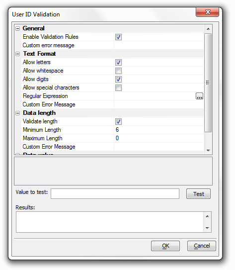
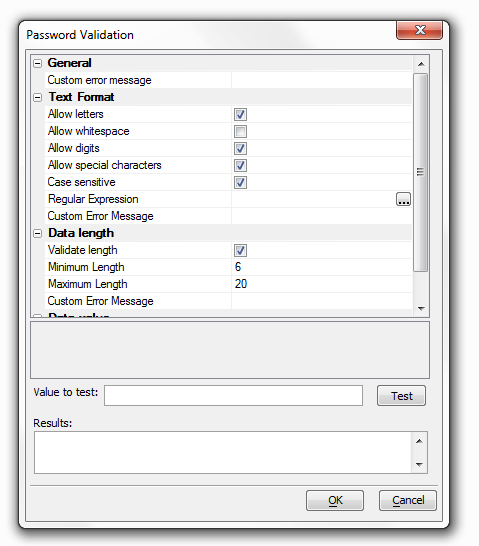

Security active - If security is not activated, all objects and actions will be available to all users without restriction. If security is active, the security system is based on membership in a group.
Password Required - Select to require a password as well as a User ID for login. A User ID is always required if security is active. If you check this box you can set password options under the 'User Id and Password Options' tab.
Redirect page - login. This is the name of the page to go to if login is required to access a selected page. This would normally be the login page, or a menu or index page. If you do not have a page designated you can type one in here
Redirect page - insufficient permission. If a logged in user does not have permission to access a selected page they will be redirected to this page. If this page is not specified, they will be redirected to the page specified for login.
Use Active Directory - Select this option if you want to use Active Directory for security data on your production server. See "Using Active Directory" link at the bottom of the dialog for more information.
Note: Checking the User Active Directory will change the 'Security Table Type' setting to 'Security Table Type for Development and Testing'. Checking this box will also remove the 'Data Recovery Options' tab from the top of the Security Settings dialog box. It will truncate the setting options that are available under 'User Id and Password Options' tab and the 'Customize Options' tab.
Security Table Type for Development and Testing - Select the data type for storing the web security data that will be used during development and testing of the application. The production deployment of the application will use Active Directory for user authentication and authorization. If the type is changed from 'DBF Files' to 'SQL Database', a genie will open when the security settings are saved to set the connection to the SQL database and define the tables to construct.

Selecting Data Type for Storing Security Data
If the type is changed from 'SQL database to 'DBF Files', a prompt will display on save to confirm the conversion.
Security Table Type - As long as the 'Use Active Directory' Setting is not checked this option will remain open. Select the data for storing the web security data. If the type is changed from 'DBF Files' to 'SQL Database', a genie will open when the security settings are saved to set the connection to the SQL database and define the tables construct. If the type is changed from 'SQL database' to 'DBF Files', a prompt will display on save to confirm the conversion.
Allow Alternative Login - The 'Use Active Directory' Setting must be unchecked to see this option. Allow alternative login bascially allows the use of an alternative login method to authenticate and login the user; such as Google. If you click the check box next to this option two more settings appear below it.
-Automatically Add Authenticated User to Security - An authenticated user can automatically be added to the system if they do not already have a security record. In the case where the user's identifier from the external authentication system does not meet the userId configuration requirements in the security system, a unique user id will be generated using the user identifier. If the user information is accepted, they will be logged into the system when the information is saved.
-After login Event - The ''afterLogin' event fires after a user has successfully been logged in using an external authentication method. This event includes variables available after login.

Login expiration policy - Policy to set the maximum login time period. All options other than 'Expires when current session expires' require the use of a cookie. If the user does not have cookies enabled, they will be logged out when the session expires.
Lockout after failed attempts - The number of times a user can try to login unsuccessfully before they are locked out of the application. Set to 0 to allow unlimited attempts.
Locked out action - The action that should be taken if a user is locked out of the system.
-'Wait for period of time' will require the user to wait a specified time until they are allowed to login with the same User ID.
-'Redirect to another page' Will send them to another page.
-'Lockout user until reset by administrator' will lock out the User ID until lock is manually released.
Locked out message - Message to show the user during login to indicate they are locked out of the system.
Locked out wait Time - Click on the box with three dots to the right and the Expiration Time dialog box will load. This allows you to set the locked out wait time.
Login activity file - When enabled this will save all login activity to a text file in the specified folder. If you click the checkbox, three option will appear below the login activity file in the list.
-'Login activity log to save to' - Folder where activity log file will be saved. Select 'User defined function' to enter your own code to process log activity data.
The 'Data folder option' does... and the 'Project Target Folder' does...
-'Login activity include failed' - When enabled, all failed attempts to log in will be recorded in the login activity log. If not checked, only successful logins are recorded in the log file.
-'Login activity include logout' - When enabled, any user logged out by the 'a5ws_logoutuser()' function will be recorded in the login activity log. No log entry will be created if no one is logged on when the log out function is called.
Login redirect option - Note: Login redirect only applies when a login component is used for login. This determines the action to take after a successful login. Select,
'Current page' if the user should stay on the page containing the login component.
'Same page' for all logins' to send all users the same page after login.
'Page assigned by user profile' to allow setting a specific page in the user profile.
Redirect page after login (when using login component) - This is the name of the page to go to after a successful login. If the redirect option is 'Page assigned by user', this page will be used if a redirect page is not assigned in the current user profile.
Note: Login redirect only applies when a login component is used for login (as opposed to a Tabbed UI or UX component with integrated Login).
Ignore return to page after login - When a person attempts to open a page or component for which they do not have permission, they are redirected to the login page. The default action is to always redirect to the page specified by the 'Login redirect option' and the 'Redirect page after login (when using login component)'. Uncheck this to return to the previous page. This option is automatically checked if component
Note: Login redirect only applies when a login component is used for login (as opposed to a Tabbed UI or UX component with integrated Login).

Overview - 'The User Id and Password Options' tab presents you with a list of optional settings for both of these topics. To make the Password Option Settings visible it check the 'Password required' box under the 'Security Policy' in the Security Settings dialog.
User ID configuration - A user id can be configured to allow an email address or a field value that meets specified validation rules.
User ID error message - This option is present when 'Email Address' is selected on the drop down list in the 'User ID configuration row above it. By default it is set to read 'Not a valid E-mail address' but you can customize the error message to you liking.
User ID validation rules - This setting appears when the User ID configuration is set to Value. You can use it to specify rules to test if the value for a user id is in fact valid. Click the box to the right and the User ID Validation dialog will appear. This allows you to set a specific value to be tested and to write a customized error message for cases in which the value of the user id is not valid.

Password encryption - Allows password data to be encrypted prior to saving in the user table. If you check this box a setting for a 'Password encryption key' setting and a 'Password use legacy encryption' setting will appear below it.
Password encryption key - This option only appears once the 'Password encryption' box above it is checked. Enter the key to use to encrypt all passwords. A key is required if encryption is selected. The key must be a minimum of 8 characters in length and a maximum of 64 characters in length. The key can use characters, numbers, and special characters.
Password use legacy encryption - Select to use the legacy encryption used by Alpha Five versions before Alpha Anywhere for new passwords
Allow password change at login - Allows the user to change their password at login when using the login component.
Note: This option is only used by the login component.
Password validation rules - Specify rules to test if the value for the password is valid. Click the button to the right to edit rules and a dialog entitled 'Password Validation' will appear.

How do you use this dialog?
Password expires? - Allows setting an expiration time for a password. A new password must be entered when the current password expires. If you check this box a setting for a 'Password expiration time' option will appear below it.
Password expiration time. The period of time a password will be active before it automatically expires. The expiration is re-calculated when a new password is entered. The default expiration time is one year.
Password restricted re-use - The number of old passwords that are saved in a restricted list and can not be re-used. A value of 0 will allow any password to be re-used without restriction. A value of 1 will only require that a new password does not match the current password.
Overview - The 'Data Recovery Options' tab appears as long as the 'Use Active Directory' box under the 'Security Policy' tab on the Security Settings dialog is not checked. Generally speaking this option is not recommended.
Allow user ID recovery - Allow the user to recover their User ID if they have lost it.
Data required for recovery - The information that must be entered to identify the user to recover the User ID. From the drop down you can select either a 'Valid Email Address' or a 'Valid Email Address & Security Question'. If you select the latter of the two, a setting for 'Security questions will appear at the bottom of the page.
Lost password action - Allow the user to recover or reset a lost password. If 'reset' is selected, the system will automatically generate a new random password that meets the password validation rules. Normally the drop down next to 'Lost password action' is set to 'Not Allowed'. If you select 'Reset password' or 'Recover password' from the drop down the 'Data required for password reset or recovery' option should open underneath the 'Lost password action' option.
Data required for password reset or recovery - This option appears if 'Recover Password' or 'Reset Password' are selected in the 'Lost password action' drop down list. The data required for password reset or recovery is the information that must be entered to identify the user to recover or reset the password.
Lost data recovery method - This is the method that is used to recover a lost id or password. There are three options in the drop down list to the right, 'Send Email to user', 'Create Email link on page', and 'Show on Screen'
If 'Send Email to user' is selected five additional option settings will open below it in the Lost Data Recovery Options list. These include a 'Lost data recovery alternative method', an 'Email profile for sending emails' option, a 'Send user ID with password?' option, a 'Configure email to send to user with user ID option, and a 'Configure email to send to user with password' option. If 'Send email to user' is selected and there is no Host computer configured to send Email, the alternative method will be used.
'Create Email link on page' will show an email link on the page that will allow the user to send a pre-configured email request for lost data to a defined address. It will also open a 'Configure email request from user' option underneath it. that will create an email request from the user.
Lost data recovery alternative method - This is the method that will be used to recover a lost user id or password if 'Send Email to user' is selected and the Host computer is not configured to send email. If you select 'Create Email link on page' in the drop down list to the right a 'Configure email request from user' option will appear. In short, this will allow the user to send a pre-configured email request for lost data to a defined address.